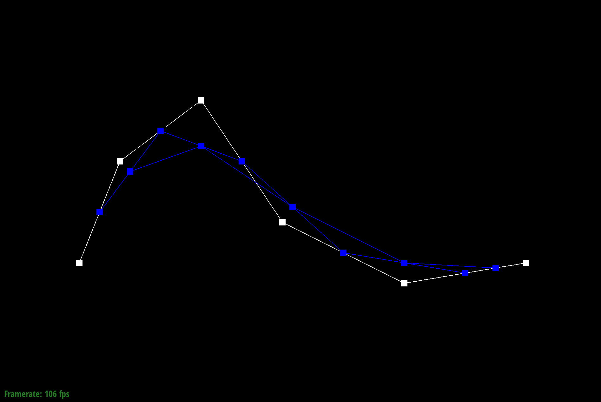

Overview
In this project, we filled in member functions of the BezierCurve and BezierPatch classes in order to deal with Bezier curves and surfaces. We utilized de Casteljau algorithm to do such tasks. By creating such functions; as well as using vertex normals for Phong shading, we were able to smooth messages/images. In regard to triangle meshes, we filled in member functions for the Vertex, HalfedgeMesh, and MeshResampler classes to reach our overall goal of loop subdivision for different meshes. Some of these functions included flipping and splitting edges using the immaculate, notorious halfedge and its other components. While it should have been a priority, I wished that we had looked at debugging splitEdge() a little more carefully. Not only did we spend countless minutes on Task 6, but a lot of time would have been saved if we ensured all pointers were pointed at the correct components. We also learned that it is best to create a visual diagram for the majority of these tasks because it has been beneficial to not only implement the function but understand the concept and material better.
Section I: Bezier Curves and Surfaces
Part 1: Bezier Curves with 1D de Casteljau Subdivision
Briefly explain de Casteljau's algorithm and how you implemented it in order to evaluate Bezier curves.Explanation of de Casteljau's algorithm
The de Casteljau algorithm takes in n control points represented as (p_1, p_2, …, p_n) and parameter t. It also estimates by the number of control points.
Implementation
We implemented a recursive function to evaluate the de Casteljau algorithm.
Therefore, we evaluated one step, in other words, one level of subdivision of the de Casteljau algorithm, given the points and scalar parameter t.
The algorithm is (p_i)’ = (1 - t) * (p_i) + t * (p_i+1)
We will return the final and single point that lies on the Bezier curve at the parameter t.
Take a look at the provided .bzc files and create your own Bezier curve with 6 control points of your choosing. Use this Bezier curve for your screenshots below.
We provided a .bzc file names "Curve3.bzc"

Show screenshots of each step / level of the evaluation from the original control points down to the final evaluated point. Press E to step through. Toggle C to show the completed Bezier curve as well.

|

|

|

|

|

|
Part 2: Bezier Surfaces with Separable 1D de Casteljau
Briefly explain how de Casteljau algorithm extends to Bezier surfaces and how you implemented it in order to evaluate Bezier surfaces.
Casteljau algorithm
De Casteljau’s algorithm extends to Bezier surfaces since the algorithm can continuously be applied in order to find the Bezier surface point (u,v) given a (u,v) point. The algorithm evaluates control points on each of the Bezier curves in u. With the control points found, we use 1D de Casteljau to evaluate point v on the moving curve.
Implementation
We will adapt what you have implemented for Bezier curves to Bezier surfaces based. We implemented a function (evaluateStep(...)) where it does something very similar to BezierCurve::evaluateStep(...) but we are instead dealing with a vector 3D, instead of a vector 2D. Working with evaluate1D(...) to return the final and single point that lies on the Bezier curve at the parameter t. And finally, we fully evaluate de Casteljau's algorithm for a vector 3D of points at scalar parameter t in evaluate1D(...) returning the final interpolated vector.
Show a screenshot of bez/teapot.bez (not .dae) evaluated by your implementation.

|
Section II: Triangle Meshes and Half-Edge Data Structure
Part 3: Area-Weighted Vertex Normals
Briefly explain how you implemented the area-weighted vertex normals.
We want to process all vertices of a face by repeatedly calling halfedge(), next(), and/or twin() pointers to move around the mesh. For each face, you weigh its normal by its area.
Implementation
By cross product the 2 vectors that make up the face and then continue to sum them up. We repeat this process until we reach the original halfedge, where then we would finally normalize the sum of all the area-weighted vertices.
These vertex normals can be used for Phong shading, which provides better shading for smooth surfaces.
Show screenshots of dae/teapot.dae (not .bez) comparing teapot shading with and without vertex normals. Use Q to toggle default flat shading and Phong shading.

|

|
Part 4: Edge Flip
Briefly explain how you implemented the edge flip operation and describe any interesting implementation / debugging tricks you have used.
Implementation:
We implemented the edge flip operation by following Figure 1: Before Flip and Figure 2: After Flip.
Phase 1:
The first step was collecting the elements from the “before” diagram by initializing and assigning Halfedges, Vertices, Edges, Faces. We mainly used the halfedge(), next() and/or twin() pointers to achieve this.
Phase 2:
The second step is reassigning the elements from the “after” diagram by reassigning Halfedges, Vertices, Edges, Faces. We mainly used the halfedge(), next() and/or twin() pointers to achieve this.
Most importantly, we implemented a clockwise approach which helped us have an easier time to implement Part 6.

|

|
Show screenshots of the teapot before and after some edge flips.

|

|
Write about your eventful debugging journey, if you have experienced one.
N/A
Part 5: Edge Split
Briefly explain how you implemented the edge split operation and describe any interesting implementation / debugging tricks you have used.Implementation:
We implemented the edge split operation by following Figure 1: Before Split and Figure 2: After Split.
Phase 1:
The first step was collecting the elements from the “before” diagram by initializing and assigning Halfedges, Vertices, Edges, Faces. We mainly used the halfedge(), next() and/or twin() pointers to achieve this.
Phase 2:
In addition to reassigning the elements from the “after” diagram for the following: Halfedges, Vertices, Edges, Faces. We used the halfedge(), next() and/or twin() pointers to achieve this.
We also needed to allocated new edges(e5, e6, e7), new vertex (v4), new faces (f2, f3), and new half edges (h10, h11, h12, h13, h14, h15)
Most importantly, we implemented a clockwise approach which helped us have an easier time to implement Part 6.

|

|
Show screenshots of a mesh before and after some edge splits.

|

|

|

|
Write about your eventful debugging journey, if you have experienced one.
N/A
If you have implemented support for boundary edges, show screenshots of your implementation properly handling split operations on boundary edges.
N/A
Part 6: Loop Subdivision for Mesh Upsampling
Briefly explain how you implemented the loop subdivision and describe any interesting implementation / debugging tricks you have used.We first calculated new positions for all vertices of the input mesh utilizing the subdivision rule. We stored these new positions in the “newPosition” holder for each vertex. Nonetheless, we also set “isNew” to false for each of these vertices to indicate that it is in the original mesh. We then updated vertex positions associated with each edge, and stored it in “newPosition”. Now going through the whole mesh, we applied the splitEdge() function to each edge of the original mesh. In order to prevent an infinite loop - inside of the splitEdge() function itself - we set “isNew” to “true” for each of the new edges that are created from the split being applied. This made it easier to properly adjust “isNew” for each edge whenever necessary. We then flip any new edge that connects an old and new vertex. We made sure to account for edges that had a new vertex connected to an old vertex, and vice versa. Lastly, we loop through the mesh’s vertices and set each of their “position” to “newPosition”.
Take some notes, as well as some screenshots, of your observations on how meshes behave after loop subdivision. What happens to sharp corners and edges? Can you reduce this effect by pre-splitting some edges?

|

|
After a mesh goes through loop subdivision, its sharp corners and edges start to gradually look less distinct as the entire mesh starts to look much smoother overall. After a mesh goes through loop subdivision, its sharp corners and edges start to gradually look less distinct as the entire mesh starts to look much smoother overall. Yes, by pre-splitting some of the edges, we can keep “some” of the sharpness. However, in general, the overall mesh’s edges and corners still look round and less sharp.
Load dae/cube.dae. Perform several iterations of loop subdivision on the cube. Notice that the cube becomes slightly asymmetric after repeated subdivisions. Can you pre-process the cube with edge flips and splits so that the cube subdivides symmetrically? Document these effects and explain why they occur. Also explain how your pre-processing helps alleviate the effects.
Yes, we can pre-process the cube with edge flips and splits so that the cube subdivides symmetrically. By splitting the initial, diagonal edge that goes across each face of the cube, we are able to preserve symmetry for every sequential loop subdivision. This is because the initial cube has diagonals that go in different directions. This is why the cube starts to look asymmetrical through multiple loop subdivisions. The pre-processing helps alleviate the effects since every single face has the same two diagonals (in an X formation). Each face then receives equal adjustment through sequential loop subdivisions.
If you have implemented any extra credit extensions, explain what you did and document how they work with screenshots.
N/A
Part 7 (Optional, Possible Extra Credit)
Save your best polygon mesh as partsevenmodel.dae in your docs folder and show us a screenshot of the mesh in your write-up.N/A
Include a series of screenshots showing your original mesh and your mesh after one and two rounds of subdivision. If you have used custom shaders, include screenshots of your mesh with those shaders applied as well.
N/A
Describe what you have done to enhance your mesh beyond the simple humanoid mesh described in the tutorial.
N/A
file:///Users/adamtangonan/p2-meshedit-sp23-no-apologiess-184/docs/index.html